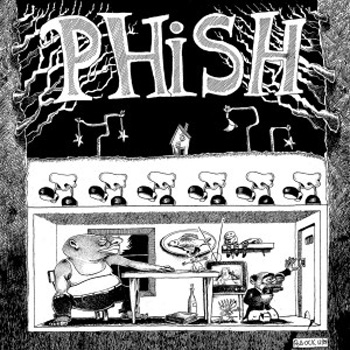
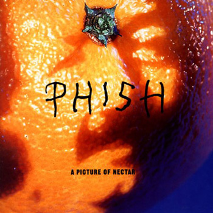
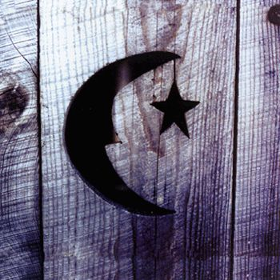

Studio Music!
Audience recordings of Phish's live shows have been traded among fans since the band's earliest days. In addition to numerous studio albums and projects, Phish has maintained a steady output of live releases, including the ongoing Live Phish Series. Phish recorded and/or released several albums before being signed to Elektra Records in 1991; they remained with Elektra through 2004, before founding their own label, JEMP Records. Phish's albums all feature the quartet of Trey Anastasio (guitar), Mike Gordon (bass guitar), Jon Fishman (drums), and Page McConnell (keyboards), often joined by a number of guest musicians.
| Home | Band Members | History | Popular Discography | Live |
The Most Buzzin' Albums
Audience recordings of Phish's live shows have been traded among fans since the band's earliest days. In addition to numerous studio albums and projects, Phish has maintained a steady output of live releases, including the ongoing Live Phish Series. Phish recorded and/or released several albums before being signed to Elektra Records in 1991; they remained with Elektra through 2004, before founding their own label, JEMP Records. Phish's albums all feature the quartet of Trey Anastasio (guitar), Mike Gordon (bass guitar), Jon Fishman (drums), and Page McConnell (keyboards), often joined by a number of guest musicians.
----------------------------------------------OFFICIAL DISCOGRAPHY------------------------------------------------------------- Junta (1989) ---------Lawn Boy (1990)---------A Picture of Nectar (1992)---------Rift (1993)---------Hoist (1994)-------- Billy Breathes (1996)--------- The Story of the Ghost (1998)---------The Siket Disc (1999)---------Farmhouse (2000)----- -------------------Round Room (2002)------------------Undermind (2004)--------------------Joy (2009)-------------------- 
The First And Most Popular Phish Album---JUNTA (1989)
Though Phish by many are said to have poor lyrics (Great, by others), it's albums like Junta that show that all they wanted to do is jam and have fun. And when you think about it, that is basically what Jam Bands are about. Like "Were going to do our thing, and if you enjoy it, great" and that is why Jam Bands usually do not hit the mainstream, and are cult groups. JOON - ta, not HUNTA - ta, (Named after a good friend) was not Phish's first official release. Their first, entitled The White Tapes or oddly enough The White Album was never released to the public through a record company. So, in a way, Junta is Phish's first album.
Junta is strongly based on jamming, definatley more so than any other Phish album. The album also gives off a very real sound, similar to how a bands first album usually is. Mainly because at this time, their were simply a couple of Vermont dorm room pals who just liked to jam. Money really wasn't a must, cathing fame (Especially from a Jam Band) were very unrealilistic. But luckily Phish managed to break into the mainstream and put a scar into it, unlike anyone has really done before.